Es caro
Las comisiones suben cuando hay mucha demanda. En horarios pico, una transferencia puede costar varios dólares.
Bitcoin / Lightning
Una introducción clara a Lightning y una práctica guiada para crear, cuidar y usar tu primera wallet.

01 Sobre mí
Community Manager de La Crypta · Programador en mis ratos libres
Honestidad · Minimalismo · Humildad · Curiosidad
Más sobre mí en Fierillolandia02 Comunidad
Comunidad de Bitcoin en Villanueva 1367, Belgrano.
Aprendemos Bitcoin haciendo: en La Crypta se come lo que se cocina.
Que Bitcoin sea una experiencia, no una promesa.
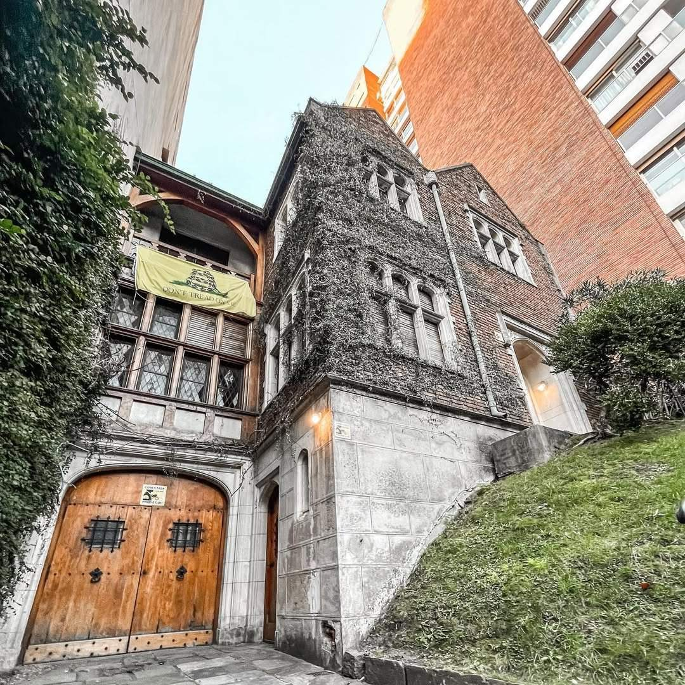
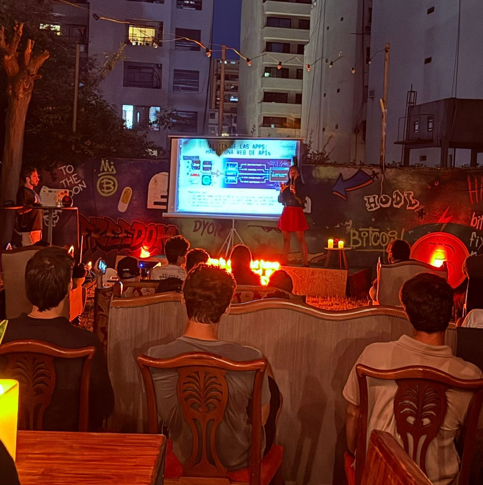
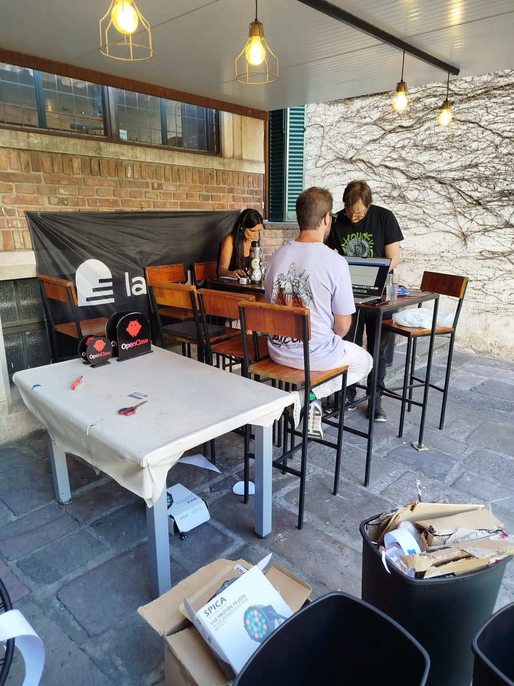
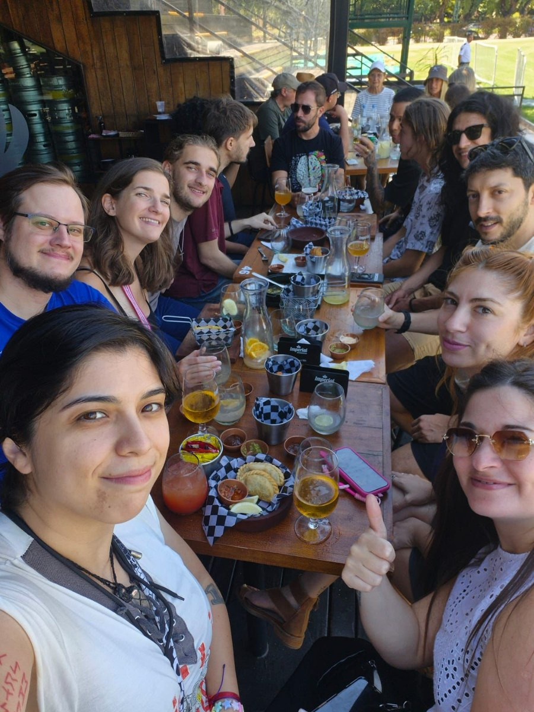
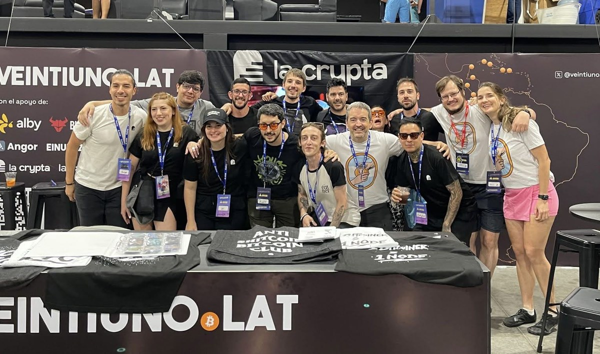
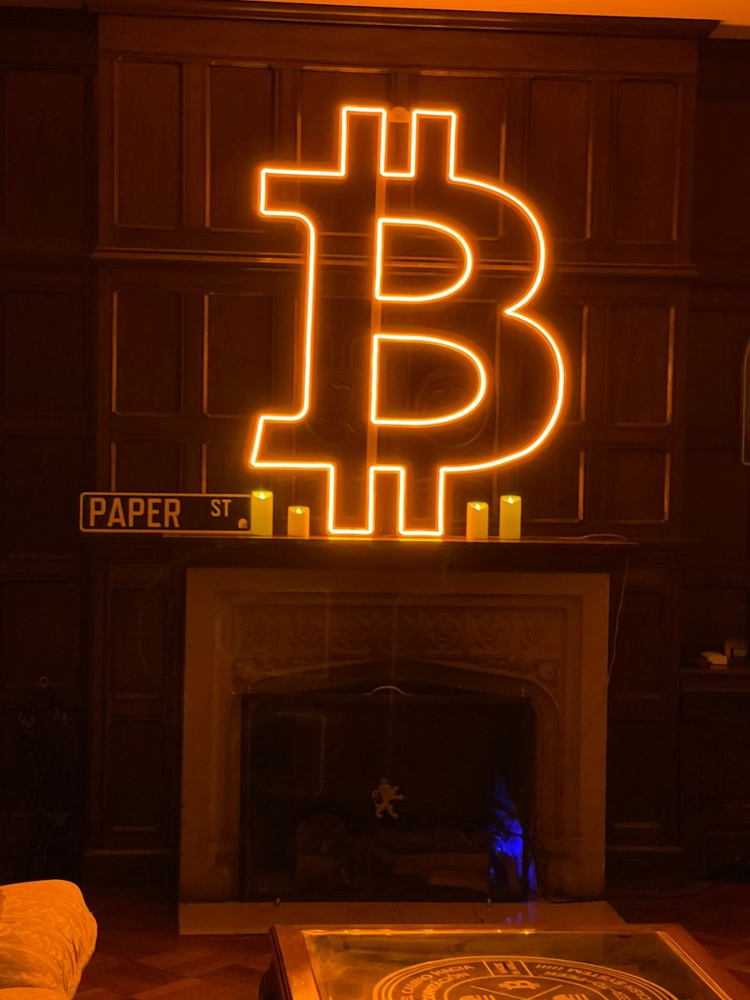
03 El mito
La queja más escuchada. Veamos qué hay detrás antes de responder.
Las comisiones suben cuando hay mucha demanda. En horarios pico, una transferencia puede costar varios dólares.
Un bloque sale cada ~10 minutos en promedio. Para pagar un café, eso es eterno.
¿Son ciertas?
La capa 1 se compara con la liquidación de un banco central: lenta, cara y definitiva.
Para pagar rápido y barato, el sistema tradicional usa una capa 2: Visa, Mastercard.
Bitcoin también tiene su capa 2: se llama Lightning.
04 Hablemos un poco de Lightning
Cada canal es un ábaco: sus pelotitas representan saldo. Pagás a Baba a través de Jaqui y Lalo, que reciben por un canal y envían por otro sin cambiar su total.
El pago se completa en conjunto. Ejemplo sin comisiones.
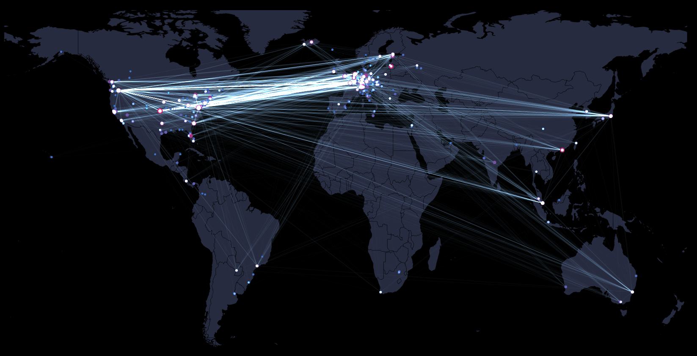
05 Wallets
Alguien guarda las llaves por vos. Fácil para empezar, pero tus sats dependen de un tercero.
Las llaves son tuyas. Más responsabilidad, nadie te puede congelar los fondos.
Para probar con poco, cualquiera. Para guardar, autocustodial.
Muy fácil · Ideal para empezar con poco
Te piden tus datos · Si la empresa te bloquea, no tenés tus sats
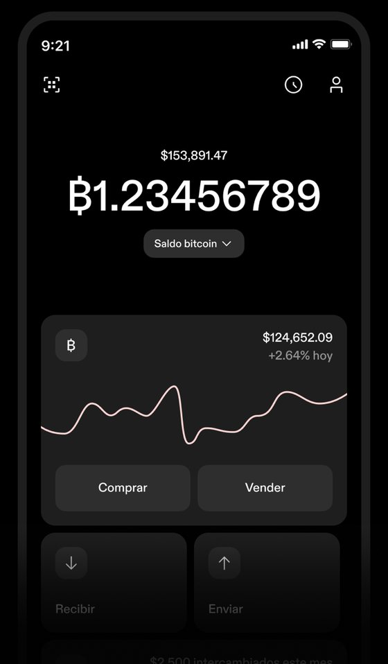
Varios activos en una app · Claves propias · Alias tether.me para facilitar transferencias
App cerrada · Servicios externos · Los tokens del emisor pueden ser congelados
Autocustodia no elimina la confianza en el emisor de los tokens. Revisá siempre el activo y la red antes de enviar. Sitio oficial ↗
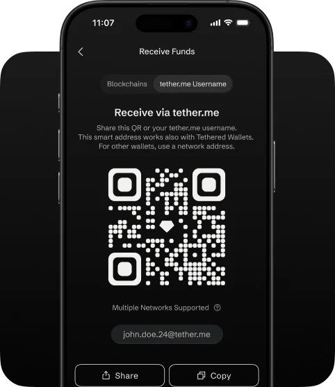
Claves propias · Código abierto · Aprendés a usar canales Lightning
Requiere sincronización · Liquidez y costos de canales · Más responsabilidad por los respaldos
Puede ayudarte a abrir canales automáticamente; eso no elimina los costos ni la necesidad de liquidez. Sitio oficial y guías ↗
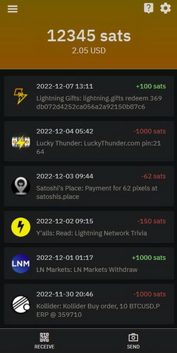
06 Taller
En el taller practicás cada paso en tu propio teléfono.
Qué mirar para elegir una opción a tu medida.
Crearla y entender la recuperación.
Leer el comprobante de pago y reconocer los datos importantes.
Enviar un pago de prueba y ver qué pasó.
Fácil para empezar · No necesitás abrir canales · En modo Spark tenés tus claves
App de código cerrado · En modo custodial dependés de la empresa; en Spark, de operadores para transferir
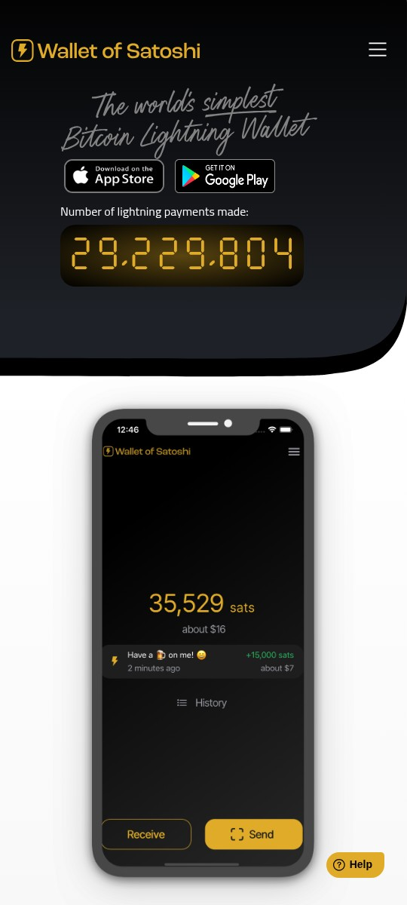
ZEUS puede ejecutar un nodo en tu teléfono con LDK o LND integrado, o conectarse a un nodo o una wallet remota. Acá mostramos dos rutas partiendo de LDK:
Pagás y recibís por Lightning usando los canales de una mint. No necesitás abrir canales propios; confiás en ella para canjear tus fichas.
Entre las mints que aparecen, recomendamos Minibits para probar con pocos sats, no para guardar ahorros. Su URL es https://mint.minibits.cash/Bitcoin; en este asistente no hace falta pegarla manualmente.
La mint es custodial, experimental y opera sin garantías: si falla o no canjea tus fichas, podés perder el saldo. Antes de cargar fondos, guardá tus respaldos siguiendo las indicaciones de ZEUS.
El video muestra la configuración y la inicialización, no un pago ni el respaldo. Los menús pueden variar según la versión. Documentación de Cashu en ZEUS ↗
Podés empezar con Cashu y después pasar a canales propios. Abrir canales tiene costos; en LDK necesitás la frase de recuperación y el respaldo de canales.
Código abierto · Podés empezar simple y avanzar hacia canales propios
Cashu: riesgo de la mint · LDK: costos, liquidez y respaldos de canales
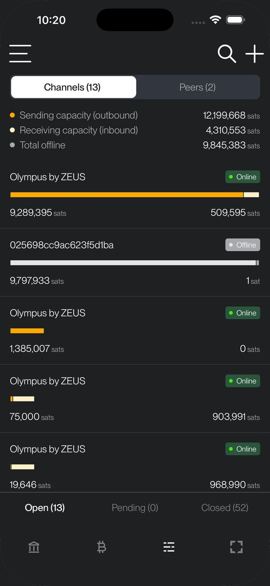
Autocustodia progresiva Código abiertoEscalá a tu ritmo · Dirección Lightning de la comunidad
Al inicio podés depender de una wallet de cortesía · Pasar a tu NWC es un paso más
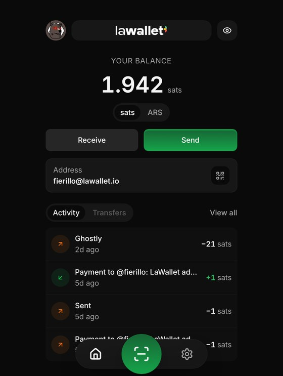
LaWallet
Varias Lightning Address.
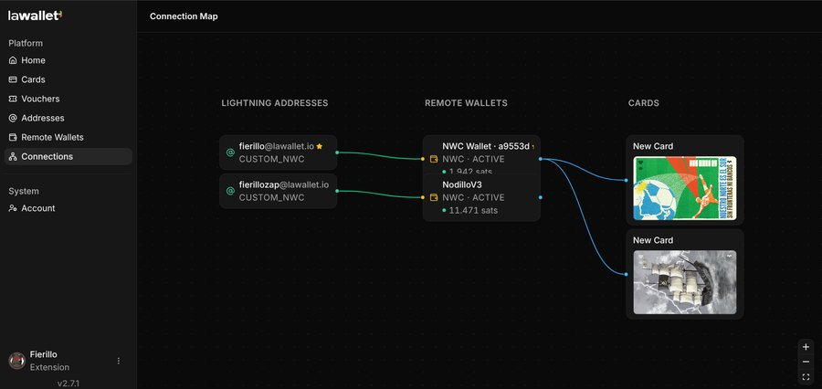
Para elegir la tuya
Compará tres cosas: quién cuida tus claves, si el código se puede revisar y de quién dependés para pagar. Abrí las wallets para ver sus ventajas y límites.
Recibís pagos con una dirección parecida a un email, sin montar un nodo. Podés conectar tu propia wallet más adelante.
LaWallet no cambia quién guarda tus fondos: eso depende de la wallet conectada. Conectar la tuya requiere un paso de configuración.
Una forma simple de empezar a pagar por Lightning, sin aprender a abrir canales.
En Spark tenés tus claves, pero transferir requiere operadores y al menos uno debe actuar honestamente. Retirar a la red Bitcoin puede ser lento y caro.
Reúne bitcoin, pagos Lightning, dólares digitales y oro tokenizado en una app.
Los pagos Lightning dependen de servicios externos. Los dólares y el oro tokenizados pueden ser congelados por su emisor. El respaldo en la nube depende de tu cuenta y de sus servicios.
Comprar bitcoin y pagar por Lightning desde una app financiera familiar.
Está orientada a usuarios de EE.UU. y pide verificar tu identidad. Si bloquean tu cuenta, dependés de la empresa para acceder a los fondos.
Fácil para comprar, recibir y pagar con bitcoin. Está disponible en Argentina.
Pide verificar tu identidad. No tenés una frase para recuperar los fondos por tu cuenta: dependés del acceso a tu cuenta y de la empresa.
Podés elegir cómo guardar tus fondos entre los modos disponibles, sin abrir canales Lightning.
En modo custodial confiás los fondos a la empresa. En Spark tenés tus claves, pero transferir depende de operadores y al menos uno debe actuar honestamente.
Usa canales Lightning propios, pero la app los administra para que no tengas que hacerlo a mano.
ACINQ es tu conexión a Lightning y te facilita capacidad para recibir. Abrir o ampliar esa capacidad puede tener un costo.
Maneja bitcoin en la red principal y permite pagar por Lightning desde una interfaz simple.
Para usar Lightning hace una conversión entre redes. Dependés de ese servicio y el costo puede subir cuando la red Bitcoin está congestionada.
Bitcoin y Lightning con tus propias claves. La app integra ayuda para abrir canales y recibir pagos.
Usa Blocktank para facilitar capacidad de recepción. Es un servicio del que dependés, aunque no guarde tus claves.
Te permite aprender a usar tu propio nodo y tus canales, con opciones para automatizar parte del trabajo.
Requiere más aprendizaje, batería y cuidados. Tenés que entender cómo respaldar y recuperar tus canales.
Una buena opción para manejar bitcoin en la red principal y conectar servicios adicionales.
Lightning requiere otra conexión, como LNDHub o Arkade. La custodia y las dependencias cambian según ese servicio; la app sola no las resuelve.
Podés usar un nodo en el teléfono o conectar uno propio. En esos modos tenés control de tus claves y canales.
El control trae más aprendizaje y responsabilidad por los respaldos. Cashu es otro modo: confiás el bitcoin a un emisor.
Permite manejar bitcoin en Liquid y pagar comprobantes Lightning mediante una conversión.
No tiene canales Lightning propios. La opción Indra permite salir por Lightning, no recibir por esa vía; dependés del servicio de conversión y de la red Liquid.
Abierto: el código de la app se puede estudiar y modificar. Cerrado: no se publica el código de la app. Tether Wallet tiene una app cerrada aunque sus herramientas de desarrollo (WDK) sean abiertas. Los enlaces llevan al código o a las referencias.
Código abierto no significa fondos bajo tu control ni seguridad garantizada. Tener tus claves tampoco elimina todas las dependencias. Elegí mirando las tres cosas juntas.